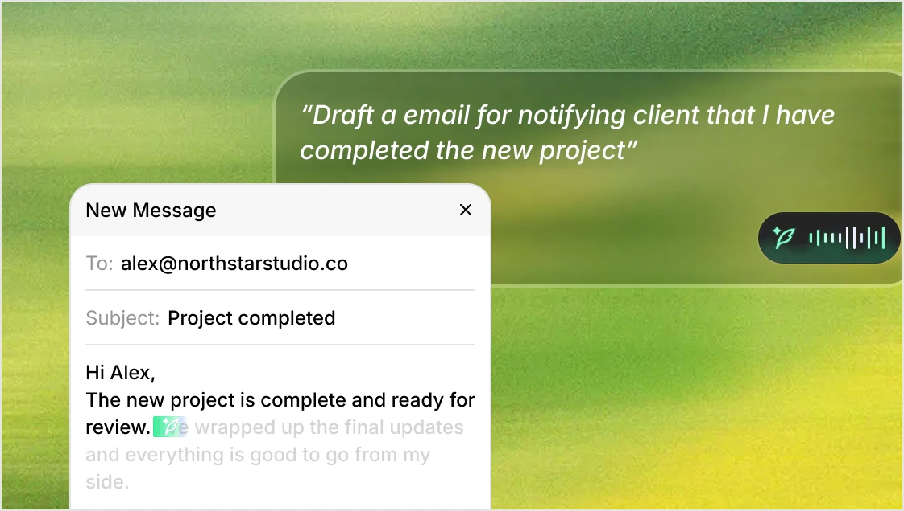
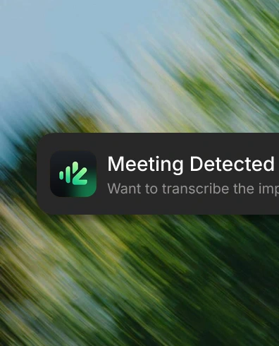
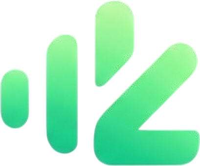

Your voice stays on your device
Speech recognition runs locally with whisper.cpp and Parakeet. Recordings, models and transcripts are files on your machine — not an upload queue.
Private by design
zTalk turns speech into clean text in any app, transcribes meetings on-device, and turns conversations into notes you can search. Your audio stays yours.
Included for every Zyeta employee · macOS 12+, Windows 10+, Android 10+

Privacy
zTalk is built the other way round: processing happens where your words already are. The cloud is an option you turn on, not a default you opt out of.
Speech recognition runs locally with whisper.cpp and Parakeet. Recordings, models and transcripts are files on your machine — not an upload queue.
Point zTalk at OpenAI, Anthropic, Gemini, Groq, Azure, Bedrock, your own gateway or the zTalk service. Switch per feature, not per app.
No advertising profile, no model training on your audio, and no analytics SDKs. Diagnostics are opt-in and off by default.
What you get
Dictation is the front door. Behind it: translation, an assistant that edits what you selected, meeting notes with speakers, and a searchable archive of everything said.
Hold a key, speak, release. Clean text lands at the cursor in any app — no copy-paste.
Speak in one language, paste in another, with the same one-key flow.
Say what you want done. Selected text is edited in place, or the answer is pasted where you type.
Zoom, Teams and FaceTime are detected automatically. Record, transcribe and summarise with speaker labels.
On-device diarization and voice fingerprints label who said what across meetings.
Folders, semantic search, sharing and AI actions over every transcript you keep.
Shared notes, roles and membership enforced by the server, with org-wide policy.
Drop in files or paste a media URL, batch transcribe, and detect speakers automatically.
Automate notes and transcripts, or connect Claude, ChatGPT and Cursor to your archive.
The same pipeline runs either way: microphone, voice activity detection, model, cleanup, paste. Choose per task — offline dictation with a local model, cloud meetings for a long call, or your own inference server.

Download
Installers for macOS, Windows and Android. The mobile app brings dictation and notes to your phone, with a system keyboard.
Apple silicon · macOS 12+
Apple silicon build. First launch: right-click the app → Open.
Windows 10 and 11 · x64
64-bit installer. SmartScreen: More info → Run anyway.
Android 10+ · on-device or cloud
Sideloaded until the Play Store listing is approved.
Linux packages (`.deb`, `.rpm`, `.AppImage`) are not published yet — the desktop app builds from source on Linux in the meantime.
Common questions
Only if you choose a cloud mode. Local dictation, local meetings and local cleanup run on your machine; you can verify it by disconnecting from the network.
Yes. Add keys for OpenAI, Anthropic, Gemini, Groq, Mistral, OpenRouter, xAI, Deepgram, AssemblyAI, Corti or a custom OpenAI-compatible endpoint, or point zTalk at your own self-hosted server.
Dictation covers the languages of the local model you choose — zVoice and Whisper are multilingual, Parakeet and Cohere cover their own sets. The interface is translated into 11 languages.
zVoice is our streaming and offline speech model. It transcribes while you talk, returns one clean transcript on release, and can also run fully on-device.
zTalk detects Zoom, Teams, FaceTime, Webex and browser calls. It captures system audio locally and labels speakers, so the other participants are not recorded separately or joined by a bot.
zTalk is proprietary software by Zyeta Intelligence Lab. It is not open source, and no part of it may be redistributed without written permission.
The installers are not signed with a paid platform certificate yet, so the first launch asks for confirmation: on macOS right-click the app and choose Open; on Windows choose More info then Run anyway. The Android build is sideloaded from the APK.

Install zTalk and dictate your next sentence in under a minute.